Facial Keypoint Detection
Part 1: Nose Tip Detection
To get a feel for keypoint detection, I started off with just detecting the nose tips. Here are a few of the training data.
I trained a simple convolutional neural net with 4 convolutional layers and two fully connected layers to predict the location of the nose keypoint.
Training and Validation Losses:
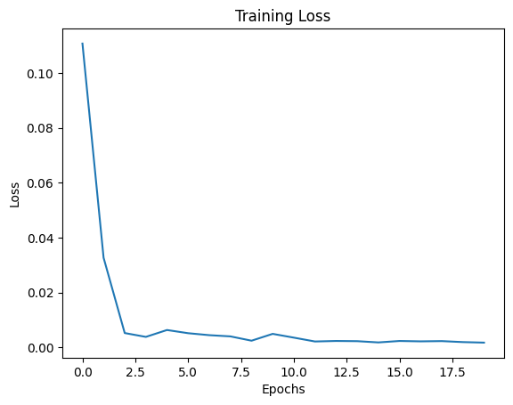 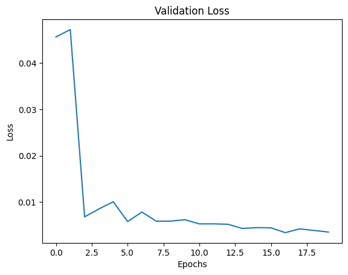Some good predictions of my model:
Some weak predictions of my model:
Notably, in the bad predictions that my model makes, the person's face is tilted or shifted. This is the "out of distribution" data in my set.
Part 2: Full Facial Keypoints Detection
This part aims to detect the full facial keypoint structure of faces. To widen the breadth of the training distribution, some random rotations (+/- 15 degrees), translations (+/- 10 pixels) and pixel jittering are induced. Below are the results and visualizations from the network.
Network Architecture
The network is a convolutional neural network (CNN) designed for facial keypoints detection. Below are the details of its architecture:
- Input: Grayscale images with 1 channel of size
h × w. - Output: 116 values (x, y coordinates for 58 keypoints).
Convolutional Layers:
| Layer | Input Channels | Output Channels | Kernel Size | Stride | Padding | Output Dimensions |
|---|---|---|---|---|---|---|
| Conv1 | 1 | 8 | 7×7 | 1 | 3 | h/2 × w/2 |
| Conv2 | 8 | 14 | 5×5 | 1 | 2 | h/4 × w/4 |
| Conv3 | 14 | 20 | 3×3 | 1 | 1 | h/8 × w/8 |
| Conv4 | 20 | 26 | 3×3 | 1 | 1 | h/16 × w/16 |
| Conv5 | 26 | 32 | 3×3 | 1 | 1 | h/16 × w/16 |
Fully Connected Layers:
- Layer 1: Input = 5280, Output = 2000, Activation = ReLU.
- Layer 2: Input = 2000, Output = 500, Activation = ReLU.
- Layer 3: Input = 500, Output = 116 (x, y coordinates), Activation = None.
Hyperparameters:
- Learning Rate: 2×10⁻⁴
- Loss Function: Mean Squared Error (MSE).
- Optimizer: Adam Optimizer.
- Batch Size: 1
1. Sampled Images with Ground Truth Keypoints
2. Training Loss Curve
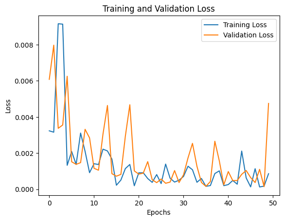The losses depicted are on the last image of each epoch, hence the high variance in the curve. However, there is certainly a downward trajectory and some sort of convergence.
3. Examples of Good and Poor Keypoint Detection
Good Detections
Poor Detections
In the images where detection was very poor, there are outstanding features that resemble certain creases the model is associating with the keypoints on which it was trained. For example, in Sample 13, the lower portion of the woman's smile is conflated with her chin. We can remedy this with a larger dataset.
4. Visualized Filters
Part 3: Training with a Larger Dataset
Finally, we try full facial keypoint detection with a larger dataset. We use the same noising techniques as in the previous part.
Modified ResNet18 Architecture
We adapt a pre-trained ResNet18 for facial keypoint detection. Below are the modifications:
- The first convolutional layer is updated to accept grayscale input (1 channel) with the following parameters:
- Input Channels: 1
- Output Channels: 64
- Kernel Size: 7×7
- Stride: 2
- Padding: 3
- The fully connected (fc) layer is replaced to output 136 values, corresponding to 68 keypoints (x, y) coordinates.
- Learning Rate: 3e-3
- Batch Size: 1
- Optimizer: Adam
- Loss Function: Mean Squared Error (MSE)
Training Results
The following plot illustrates the training and validation loss across iterations:
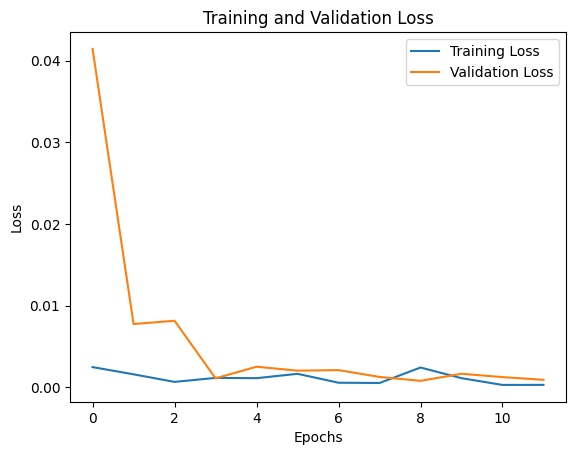Visualization of Keypoint Predictions
Below are examples of keypoint predictions on the testing set:
Good Predictions:
Bad Predictions:

Sample 9: The left side of the image is significantly less exposure, causing deterioration in keypoint detection.
Sample 10: Much of the face is out of view of the camera. The portion of the keypoint detection that is incorrect in this image is the portion of the face that isn't on the physical image.
Testing on Personal Images
Here are the results of running the trained model on three personal images:
 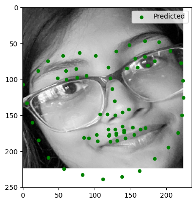
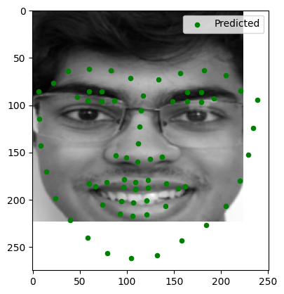
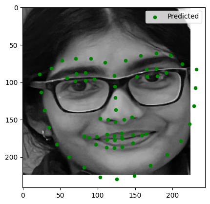
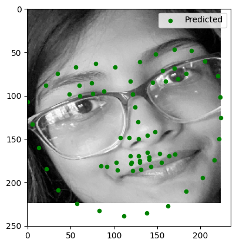
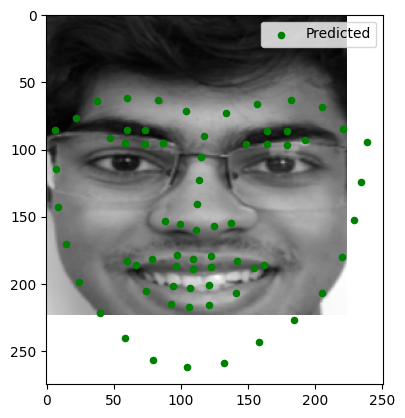
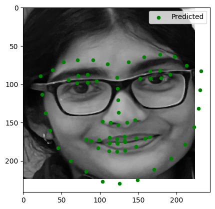
Observations:
- Image 1: Keypoints were accurately detected.
- Image 2: Minor errors in keypoint alignment, especially around the mouth.
- Image 3: Good alignment, solid out of image facial structure prediction.
Testing on Given Test Images
Here are the results of running the model on provided test images:
Observations:
- Test Image 1: Slight distortion around the lips.
- Test Image 2: Moderate errors around facial structure, good detection around eyes and nose.
- Test Image 3: Good keypoint detection.
High Dynamic Range
Solving for the Response Function (g)
The response function $g(Z)$ describes the logarithmic relationship between pixel values ($Z$) and exposure ($X = E \cdot \Delta t$). From Equation (2) in the paper, we derive:
Where:
- $Z_{ij}$: Pixel intensity of pixel $i$ in image $j$
- $E_i$: Irradiance at pixel $i$
- $\Delta t_j$: Exposure time of image $j$
To solve for $g$, we minimize a quadratic objective function:
Here, $\lambda$ is a regularization parameter controlling smoothness. The weighting function $w(Z)$ emphasizes values in the middle of the intensity range:
g curves are shown below
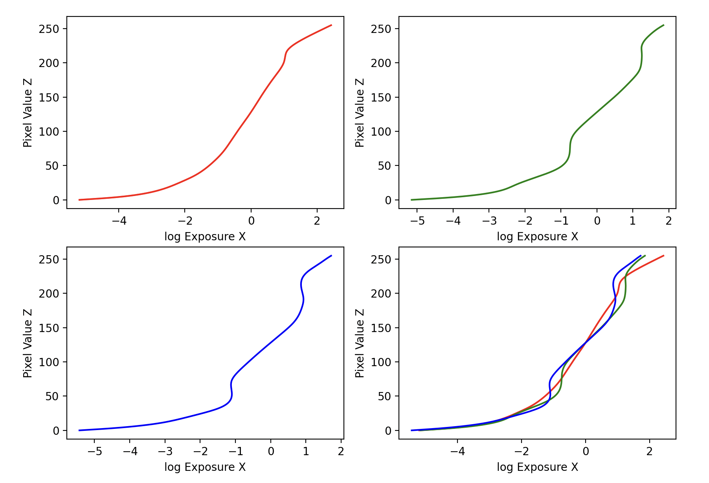Constructing the HDR Radiance Map
Once $g$ is recovered, we compute the logarithmic irradiance $\ln(E_i)$ for each pixel:
This combines information across exposures, reducing noise and artifacts.
Bilateral Filter Decomposition
The bilateral filtering process decomposes the HDR image into base and detail layers using the following steps:
1. Logarithmic Domain Processing
First, we convert the HDR radiance map to the logarithmic domain:
2. Bilateral Filtering Parameters
The bilateral filter is applied with the following parameters:
- Window diameter ($d$): 25 pixels
- Color space standard deviation ($\sigma_{\text{color}}$): 7
- Coordinate space standard deviation ($\sigma_{\text{space}}$): 7
The bilateral filter preserves edges while smoothing the image by combining domain and range filtering:
Where:
- $G_{\sigma_s}$ is the spatial Gaussian weight
- $G_{\sigma_r}$ is the range Gaussian weight
- $W_p$ is the normalization factor
3. Layer Decomposition
The image is decomposed into:
- Base layer ($B$): Contains large-scale variations
\[B = \text{bilateralFilter}(L, d=25, \sigma_{\text{color}}=7, \sigma_{\text{space}}=7)\]
- Detail layer ($D$): Preserves fine details
\[D = L - B\]
-
Log Intensity (O):
\[O = 2^{(B' + D)}\]
- Renormalization and gamma compression. gamma = 2.2.
Tone Mapping Comparison
We compare three different tone mapping approaches:
1. Global Scale (Baseline)
2. Global Operator (Reinhard)
Global tone mapping with automatic exposure adjustment:
3. Local Operator (Bilateral)
Comparative Analysis
In summary, both projects were super fun! Facial keypoint detection gave me the opportunity to mess around with neural netoworks while HDR taught me some nuances of image exposure.